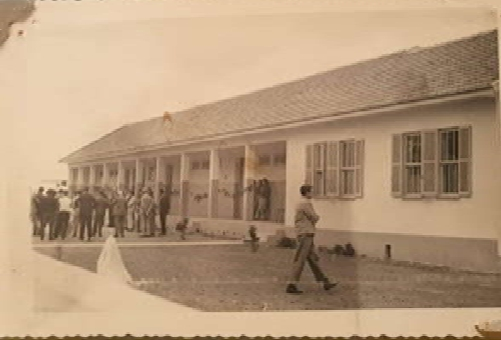
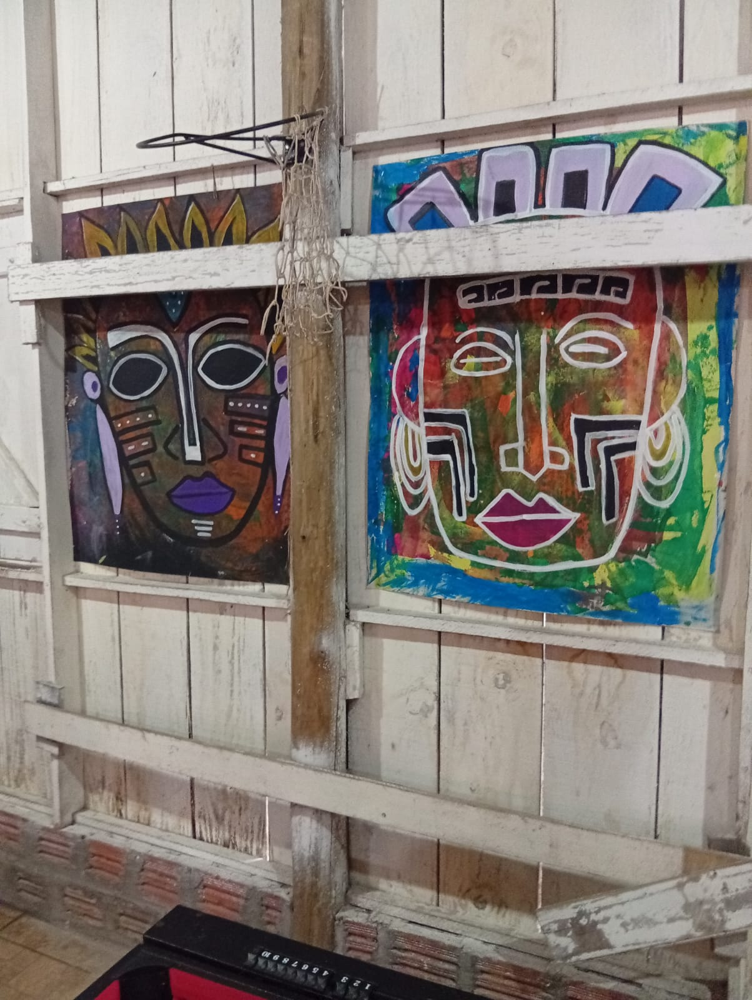

A Escola Estadual Quilombola de Ensino Médio Santa Teresinha representa não apenas um espaço de
ensino formal, mas também de fortalecimento cultural, identidade e resistência da comunidade quilombola de Morro
Alto, localizada no município de Maquiné (RS). As escolas quilombolas no Brasil desempenham papel essencial na
reparação histórica e na garantia do direito a uma educação que reconhece e valoriza saberes, memórias e práticas
culturais de matriz africana.
Durante o trabalho de campo realizado na disciplina de Filosofia e Sociologia da Educação, ministrada pela
professora Rejane, tivemos a oportunidade de conhecer a escola, observar seu funcionamento e dialogar com membros
da comunidade. A visita contribuiu para compreender tanto a relevância da instituição quanto os desafios e
potencialidades da educação quilombola no contexto gaúcho.
Primeira imagem da escola — 1958
A Escola Estadual Quilombola de Ensino Médio Santa Teresinha está situada às margens da RS-407, km 0, dentro da
comunidade quilombola de Morro Alto. Ao chegarmos, fomos recepcionados pela apresentação da banda da escola, que
demonstra como a música ocupa um lugar central na identidade e nas práticas pedagógicas do território.

Segundo predio da escola
O espaço escolar conta atualmente com cinco salas de aula, com previsão de construção de mais duas, o que
demonstra um processo contínuo de ampliação. Os murais, pinturas e ambientes coletivos refletem o compromisso com
uma educação antirracista, inclusiva e territorializada, que valoriza a história local e a identidade quilombola.
O ambiente é acolhedor e evidencia como a comunidade compreende a escola como extensão de seu próprio território.

A instituição desenvolve diversas ações que buscam fortalecer o pertencimento étnico-racial dos estudantes,
criando espaços de reflexão e orgulho identitário. Professores relataram que muitos estudantes, ao longo do
processo pedagógico, passaram a reconhecer-se como quilombolas, compreendendo a importância das lutas históricas
da comunidade.
Nossa História
Fundada em 1959, a escola passou por diferentes configurações ao longo das décadas. Contudo, apenas em 2014, com o
Decreto nº 51.121, a instituição foi oficialmente transformada e reconhecida como Escola Estadual Quilombola de
Ensino Médio Santa Teresinha. Esse ato garante identidade jurídica e pedagógica específica, alinhada à legislação
nacional voltada para a educação escolar quilombola.
No âmbito federal, esse reconhecimento dialoga com dois marcos importantes:
Decreto Federal nº 4.887/2003:
Define como remanescentes de comunidades quilombolas os grupos “segundo critérios de autoatribuição, com
trajetória histórica própria, relações territoriais específicas e presunção de ancestralidade negra vinculada à
resistência à opressão histórica”. É com base nesse dispositivo que comunidades como Morro Alto conquistam
reconhecimento territorial, cultural e político.
Diretrizes Curriculares Nacionais para a Educação Escolar Quilombola (CNE/CEB, Resolução 08/2012):
Estabelecem princípios para uma educação:
antirracista e promotora de igualdade;
vinculada ao território e à história local;
baseada em saberes tradicionais e memórias coletivas;
construída com a comunidade, e não apenas para a comunidade.
O reconhecimento como escola quilombola garante autonomia pedagógica e assegura que o currículo, as metodologias e
os projetos estejam alinhados à realidade sociocultural de Morro Alto.
Projetos e Atividades
Educação e Cultura
A escola promove oficinas de música que valorizam elementos centrais da cultura quilombola. A apresentação da
banda, feita logo no início de nossa visita, reforça a centralidade da música como expressão identitária e
pedagógica.
Saberes Tradicionais
Há integração entre conhecimentos escolares e saberes locais, ainda que de forma limitada, através da
participação dos mais velhos da comunidade.
Meio Ambiente
Projetos voltados ao cuidado da natureza estão presentes, mesmo que em pequena escala, como na horta escolar,
que antes era uma horta comunitária.
Memória, Identidade e Resistência
Um dos elementos muito marcantes da visita foi o uso da memória como ferramenta educativa e política. Um exemplo emblemático é a história de Seu Mané Chico, nascido em 1920, apenas 32 anos após a abolição.
Ele relata:
“Eu era novo e não aprendi a ler... eu não aprendi porque já entrei com muita idade...”
Seu depoimento revela as desigualdades educacionais do pós-abolição, quando o acesso à escola não era garantido aos negros. Mesmo após 1888, o Estado brasileiro manteve práticas que excluíam sistematicamente a população negra do direito à educação. A escola só chegou ao Morro quando muitos adultos já não tinham idade para frequentar ou já estavam integralmente submetidos ao trabalho.
Essas memórias ajudam os jovens a compreender que sua trajetória faz parte de um processo histórico de resistência, não de ausência de capacidade ou valor.
Importância da Escola Quilombola no RS
Sendo a única escola quilombola do Rio Grande do Sul, a Santa Teresinha possui papel estratégico no estado:
funciona como referência pedagógica para outras escolas que atendem comunidades quilombolas, mesmo sem reconhecimento formal;
preserva a história do território de Morro Alto, uma das comunidades negras mais antigas da região;
contribui para a formação de jovens quilombolas que permanecem e atuam no território;
fortalece debates sobre antirracismo e educação no contexto sul-rio-grandense.
O fortalecimento da escola também é parte das lutas maiores por regularização fundiária, permanência no território e enfrentamento ao racismo estrutural.
Considerações finais
A Escola Estadual Quilombola de Ensino Médio Santa Teresinha demonstra que a educação, quando alinhada ao território, à cultura e às demandas da comunidade, torna-se um instrumento de transformação social. Sua história e suas práticas evidenciam um modelo de escola que:
valoriza identidades;
fortalece laços comunitários;
combate desigualdades históricas;
mantém viva a memória quilombola.
A visita de campo permitiu compreender o papel decisivo da escola na luta da comunidade de Morro Alto pela afirmação de seus direitos e pela continuidade de sua história. Mais que um espaço de ensino, a escola é território, memória e resistência.
Referências
ANTOS, Ana Rita Machado dos. Por que o termo quilombola não foi destacado na placa de uma escola estadual do RS? Osório: Uergs, 2023.